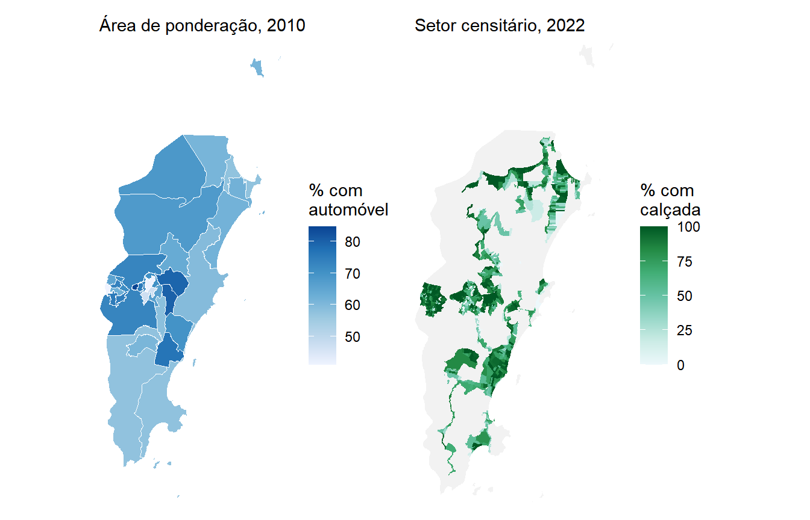

| Quesito | 2010 | 2022 |
|---|---|---|
| Posse de motocicleta | V0221 |
Não investigado |
| Posse de automóvel | V0222 |
Não investigado |
| Município onde trabalha | V0660, V6604 |
Quesito 15.01 |
| Retorna do trabalho para casa | V0661, diariamente |
Quesito 15.02, três dias ou mais |
| Tempo de deslocamento | V0662, cinco faixas |
Quesito 15.03, horas e minutos |
| Modo de transporte principal | Não investigado | Quesito 15.04, 14 categorias |
| Deslocamento para estudo | Não investigado | Bloco 13 |
15 Mobilidade
15.1 Introdução
Deslocar-se é a mais cotidiana das necessidades urbanas e a mais desigualmente atendida. Duas pessoas que moram a poucos quilômetros uma da outra podem levar dez minutos ou duas horas para chegar ao trabalho, dependendo de onde moram, de onde trabalham e do que têm à disposição para vencer a distância.
Pesquisas de origem e destino descrevem isso com um detalhe que nenhuma outra fonte alcança, mas existem em poucas cidades e são refeitas em intervalos longos. O Censo cobre os cinco mil e poucos municípios do país, com periodicidade regular, e por isso continua sendo a única base que permite comparar a mobilidade de qualquer cidade brasileira com a de qualquer outra.
Este capítulo trata de duas coisas diferentes que costumam ser confundidas. A primeira é o comportamento, ou seja, quanto tempo as pessoas gastam, para onde vão e com que meios contam. A segunda é a infraestrutura, ou seja, o que a rua em frente à casa oferece a quem sai dela a pé, de bicicleta ou de ônibus. As duas vêm de produtos diferentes do Censo e nenhuma explica a outra sozinha.
O município escolhido é Florianópolis (SC), capital insular cuja geografia impõe restrições de deslocamento que poucas cidades brasileiras enfrentam com a mesma intensidade.
15.2 O que cada edição do Censo permite investigar
Antes de qualquer cálculo, é preciso saber o que existe. Este é o capítulo do livro em que a diferença entre as edições mais restringe o que se pode fazer, e ignorá-la levaria a procurar variáveis que não existem ou a comparar quesitos que mudaram de redação.
Três leituras importam nessa tabela. A primeira é que 2022 eliminou a posse de veículos. O bloco de bens duráveis do Questionário da Amostra ficou reduzido a dois itens, máquina de lavar roupa e acesso à internet, e automóvel e motocicleta saíram. Não haverá continuidade para esse indicador.
A segunda é que 2022 ganhou o modo de transporte, que nunca existiu em censo brasileiro anterior. Quando os microdados forem divulgados, será possível descrever a divisão modal do deslocamento casa-trabalho para qualquer município do país.
A terceira é mais sutil e mais perigosa. O quesito sobre retorno ao domicílio mudou de redação, de “retorna do trabalho para casa diariamente” em 2010 para “retorna do trabalho para casa três dias ou mais na semana” em 2022. São perguntas diferentes, e comparar as duas respostas produziria uma variação que é do questionário, e não do mundo.
Como os microdados de 2022 ainda não foram divulgados, conforme discutido no Capítulo 8, todo o comportamento de deslocamento deste capítulo vem de 2010. A infraestrutura, que vem do Entorno, é de 2022.
15.3 Preparando os microdados de 2010
Obtemos o código do município e a geometria das áreas de ponderação, que é a unidade de divulgação dos microdados.
florianopolis <- lookup_muni(name_muni = "Florianópolis", year = 2022)$code_muni
ap_floripa <- read_weighting_area(
code_weighting = florianopolis,
year = 2010,
simplified = FALSE
)
ap_cods <- ap_floripa |>
pull(code_weighting)O código do município e o número de áreas de ponderação dimensionam o que vem a seguir.
c(codigo_ibge = florianopolis, areas_de_ponderacao = length(ap_cods)) codigo_ibge areas_de_ponderacao
4205407 30 O capítulo usa dois arquivos de microdados. A posse de veículos é característica do domicílio e está no arquivo de domicílios. O tempo de deslocamento e o local de trabalho são características da pessoa e estão no arquivo de pessoas.
Começamos pelos domicílios. Além das duas variáveis de interesse, pedimos V4001, que identifica o tipo de domicílio, por uma razão que ficará clara adiante.
cols_dom <- c(
"V0300", # Identificador do domicílio
"V0010", # Peso amostral calibrado
"code_weighting", # Área de ponderação
"V4001", # Tipo de domicílio
"V0221", # Motocicleta para uso particular
"V0222" # Automóvel para uso particular
)
md_dom <- read_households(year = 2010, columns = cols_dom) |>
filter(code_weighting %in% ap_cods) |>
collect()
md_dom |>
count(V0222)# A tibble: 3 × 2
V0222 n
<chr> <int>
1 1 9215
2 2 4827
3 <NA> 151Há registros sem resposta, e antes de aplicar na.rm = TRUE convém entender de onde vêm. O cruzamento com o tipo de domicílio resolve a dúvida.
md_dom |>
group_by(V4001) |>
summarise(
registros = n(),
sem_resposta = sum(is.na(V0222))
)# A tibble: 3 × 3
V4001 registros sem_resposta
<chr> <int> <int>
1 01 14042 0
2 05 8 8
3 06 143 143Todos os ausentes estão nos tipos 05 e 06, que são o domicílio particular improvisado e o domicílio coletivo. O quesito de bens duráveis só é aplicado a domicílios particulares permanentes, de código 01, e por isso os demais chegam em branco. Não se trata de não resposta, e sim de não aplicação.
A conduta correta, portanto, não é descartar os ausentes com na.rm = TRUE, e sim restringir a análise ao universo em que a pergunta foi feita. As duas coisas produzem o mesmo número neste caso, mas apenas a segunda deixa o universo explícito para quem lê.
md_dom <- md_dom |>
filter(V4001 == "01")
dom_ap <- md_dom |>
group_by(code_weighting) |>
summarize(n_dom = sum(V0010))
md_dom <- md_dom |>
left_join(dom_ap, by = join_by(code_weighting))
pa_dom <- md_dom |>
as_survey_design(
strata = code_weighting,
weights = V0010,
fpc = n_dom
)O arquivo de pessoas segue a mesma lógica, com a diferença já discutida no Capítulo 8, que é a necessidade de declarar o domicílio como unidade de conglomeração.
cols_pes <- c(
"V0300", # Identificador do domicílio (conglomerado)
"V0010", # Peso amostral calibrado
"code_weighting", # Área de ponderação
"V0660", # Município ou país onde trabalha
"V0661", # Retorna do trabalho para casa diariamente
"V0662" # Tempo habitual de deslocamento até o trabalho
)
md_pes <- read_population(year = 2010, columns = cols_pes) |>
filter(code_weighting %in% ap_cods) |>
collect()
pes_ap <- md_pes |>
group_by(code_weighting) |>
summarize(n_ind = sum(V0010))
md_pes <- md_pes |>
left_join(pes_ap, by = join_by(code_weighting))
pa_pes <- md_pes |>
as_survey_design(
ids = V0300,
strata = code_weighting,
weights = V0010,
fpc = n_ind
)
nrow(md_pes)[1] 40228Com os dois desenhos amostrais declarados, podemos calcular.
15.4 O que havia na garagem
A posse de veículo não mede mobilidade, mede possibilidade. Um domicílio com automóvel tem uma alternativa que um domicílio sem automóvel não tem, e essa diferença estrutura tudo o mais, do tempo de viagem à sensibilidade à qualidade do transporte público.
pa_dom |>
summarise(
automovel = survey_mean(V0222 == "1", vartype = "ci"),
motocicleta = survey_mean(V0221 == "1", vartype = "ci")
) |>
knitr::kable(digits = 3, format.args = list(decimal.mark = ","))| automovel | automovel_low | automovel_upp | motocicleta | motocicleta_low | motocicleta_upp |
|---|---|---|---|---|---|
| 0,657 | 0,65 | 0,665 | 0,149 | 0,143 | 0,155 |
Dois em cada três domicílios particulares permanentes de Florianópolis tinham automóvel em 2010, proporção alta para o padrão brasileiro da época. A motocicleta aparecia em cerca de um em cada sete.
O interesse está na distribuição interna, e os dois mapas a seguir mostram que ela é bem diferente para cada veículo.
veic_ap <- pa_dom |>
group_by(code_weighting) |>
summarize(
automovel = survey_mean(V0222 == "1"),
motocicleta = survey_mean(V0221 == "1")
)
veic_geo <- ap_floripa |>
left_join(veic_ap, by = join_by(code_weighting))
mapa_auto <- ggplot(veic_geo) +
geom_sf(aes(fill = 100 * automovel), color = "white", linewidth = 0.2) +
scale_fill_distiller(palette = "Blues", direction = 1,
name = "% dos\ndomicílios", na.value = "gray90") +
coord_sf(expand = FALSE) +
labs(subtitle = "Automóvel") +
theme_minimal() +
theme(axis.text = element_blank(), axis.ticks = element_blank(),
panel.grid = element_blank())
mapa_moto <- ggplot(veic_geo) +
geom_sf(aes(fill = 100 * motocicleta), color = "white", linewidth = 0.2) +
scale_fill_distiller(palette = "Oranges", direction = 1,
name = "% dos\ndomicílios", na.value = "gray90") +
coord_sf(expand = FALSE) +
labs(subtitle = "Motocicleta") +
theme_minimal() +
theme(axis.text = element_blank(), axis.ticks = element_blank(),
panel.grid = element_blank())
mapa_auto + mapa_moto
Os dois padrões são praticamente opostos. As áreas com maior proporção de domicílios com automóvel são justamente as de menor proporção de motocicleta, e vice-versa. A leitura mais direta é a de que a motocicleta funciona como alternativa de menor custo onde o automóvel é menos acessível, e não como um bem adicional de quem já tem carro.
veic_ap |>
summarise(
auto_minimo = 100 * min(automovel),
auto_maximo = 100 * max(automovel),
moto_minimo = 100 * min(motocicleta),
moto_maximo = 100 * max(motocicleta)
) |>
knitr::kable(digits = 1, format.args = list(decimal.mark = ","))| auto_minimo | auto_maximo | moto_minimo | moto_maximo |
|---|---|---|---|
| 41,2 | 84,7 | 7,8 | 21,8 |
A amplitude do automóvel entre áreas de ponderação passa de quarenta pontos percentuais, o que é uma desigualdade grande para um município de porte médio.
15.5 Quanto tempo se leva
O tempo de deslocamento é o indicador de mobilidade mais próximo da experiência cotidiana. Em 2010 ele foi coletado em cinco faixas, o que impede calcular média ou mediana e limita a análise a proporções.
Antes de calcular, é essencial fixar o universo. O quesito V0662 só é aplicado a quem trabalha fora do domicílio, de modo que o denominador não é a população nem sequer o total de ocupados. É o conjunto de pessoas que efetivamente se deslocam. Declaramos isso filtrando o desenho amostral, o que faz o srvyr tratar o subconjunto como domínio e calcular os erros-padrão corretamente.
pa_pes |>
filter(!is.na(V0662)) |>
mutate(
faixa = factor(
V0662,
levels = c("1", "2", "3", "4", "5"),
labels = c("Até 5 minutos", "De 6 minutos a meia hora",
"Mais de meia hora até uma hora", "Mais de uma hora até duas horas",
"Mais de duas horas")
)
) |>
group_by(faixa) |>
summarize(proporcao = survey_prop(vartype = "ci")) |>
knitr::kable(digits = 3, format.args = list(decimal.mark = ","))| faixa | proporcao | proporcao_low | proporcao_upp |
|---|---|---|---|
| Até 5 minutos | 0,096 | 0,091 | 0,102 |
| De 6 minutos a meia hora | 0,574 | 0,566 | 0,583 |
| Mais de meia hora até uma hora | 0,248 | 0,240 | 0,255 |
| Mais de uma hora até duas horas | 0,075 | 0,071 | 0,080 |
| Mais de duas horas | 0,006 | 0,005 | 0,008 |
A maior parte das viagens de Florianópolis cabia em meia hora, e cerca de oito por cento passavam de uma hora. Esse último grupo é o que interessa à política pública, porque tempo de deslocamento excessivo é uma forma de privação que se acumula todos os dias.
tempo_ap <- pa_pes |>
filter(!is.na(V0662)) |>
group_by(code_weighting) |>
summarize(mais_de_uma_hora = survey_mean(V0662 %in% c("4", "5")))
ap_floripa |>
left_join(tempo_ap, by = join_by(code_weighting)) |>
ggplot() +
geom_sf(aes(fill = 100 * mais_de_uma_hora), color = "white", linewidth = 0.2) +
scale_fill_distiller(palette = "RdPu", direction = 1,
name = "% acima de\numa hora", na.value = "gray90") +
coord_sf(expand = FALSE) +
theme_minimal() +
theme(axis.text = element_blank(), axis.ticks = element_blank(),
panel.grid = element_blank())
O mapa mostra manchas bem distintas, e vale medir o tamanho dessa variação e confrontá-lo com a incerteza das estimativas.
tempo_ap |>
summarise(
minimo = 100 * min(mais_de_uma_hora),
maximo = 100 * max(mais_de_uma_hora),
largura_media_do_ic = 100 * mean(2 * 1.96 * mais_de_uma_hora_se)
) |>
knitr::kable(digits = 1, format.args = list(decimal.mark = ","))| minimo | maximo | largura_media_do_ic |
|---|---|---|
| 1,6 | 31,5 | 4,8 |
A amplitude é enorme, com áreas em que quase ninguém gasta mais de uma hora e áreas em que quase um terço dos trabalhadores gasta. A largura média do intervalo de confiança fica bem abaixo dessa diferença, o que significa que o contraste entre os extremos é real, e não ruído amostral. Diferenças pequenas entre áreas vizinhas, porém, continuam exigindo cautela.
15.6 Onde se trabalha
O tempo gasto depende de para onde se vai, e a variável V0660 responde essa pergunta em termos municipais.
pa_pes |>
filter(!is.na(V0660)) |>
mutate(
local = factor(
V0660,
levels = c("1", "2", "3", "4", "5"),
labels = c("No próprio domicílio", "Neste município, fora do domicílio",
"Em outro município", "Em país estrangeiro",
"Em mais de um município ou país")
)
) |>
group_by(local) |>
summarize(proporcao = survey_prop(vartype = "ci")) |>
knitr::kable(digits = 4, format.args = list(decimal.mark = ","))| local | proporcao | proporcao_low | proporcao_upp |
|---|---|---|---|
| No próprio domicílio | 0,1721 | 0,1653 | 0,1791 |
| Neste município, fora do domicílio | 0,7470 | 0,7394 | 0,7544 |
| Em outro município | 0,0684 | 0,0648 | 0,0723 |
| Em país estrangeiro | 0,0007 | 0,0004 | 0,0012 |
| Em mais de um município ou país | 0,0118 | 0,0103 | 0,0136 |
Três quartos dos trabalhadores de Florianópolis trabalhavam no próprio município, fora de casa, e menos de sete por cento saíam do município para trabalhar. Esse número é baixo, e a razão é que Florianópolis é o polo da sua região metropolitana, e não uma cidade-dormitório. O movimento pendular relevante ali é o de entrada, vindo dos municípios vizinhos, e não o de saída.
Cabe um alerta metodológico. Um censo municipal descreve quem mora no município, e não quem trabalha nele. Para dimensionar quem chega de fora todos os dias seria preciso ler os microdados dos municípios de origem e usar V6604, que informa o município de trabalho. O capítulo não faz isso, e o leitor que precisar dessa conta deve ter em mente que o recorte de leitura muda por completo.
Descrito o comportamento, passamos à infraestrutura.
15.7 O espaço público de quem não dirige
Muda a fonte, muda o ano e muda a unidade espacial. A Pesquisa Urbanística do Entorno dos Domicílios, apresentada no Capítulo 11, descreve por observação direta o que existe na face de quadra em frente a cada domicílio, e é divulgada por setor censitário para 2022.
Seis dos dez itens investigados em 2022 dizem respeito direto à mobilidade. Dois deles descrevem a via, que são a pavimentação e a sinalização para bicicleta. Três descrevem a calçada, que são a existência, a presença de obstáculo e a rampa para cadeirante. E um descreve a oferta de transporte público, que é o ponto de ônibus.
Usamos o bloco de domicílios do arquivo de Entorno, e não o de faces de quadra. A escolha importa. Contar faces mede extensão de via, enquanto contar domicílios mede quantas moradias estão diante de cada situação, que é o que interessa quando a pergunta é sobre pessoas.
ent_floripa <- read_tracts(dataset = "Entorno", year = 2022) |>
filter(code_muni == florianopolis) |>
select(code_tract, name_neighborhood,
domicilios_V05000,
domicilios_V05006, domicilios_V05007, domicilios_V05008,
domicilios_V05015, domicilios_V05016, domicilios_V05017,
domicilios_V05018, domicilios_V05019, domicilios_V05020,
domicilios_V05021, domicilios_V05022, domicilios_V05023,
domicilios_V05024, domicilios_V05025, domicilios_V05026,
domicilios_V05027, domicilios_V05028, domicilios_V05029) |>
collect()
nrow(ent_floripa)[1] 912O denominador de todos os indicadores é domicilios_V05000, o total de domicílios particulares permanentes com entorno pesquisado. Não é o total de domicílios do setor, pela razão discutida na Seção 11.4. Vale medir o quanto o entorno cobre do município.
bas_floripa <- read_tracts(dataset = "Basico", year = 2022) |>
filter(code_muni == florianopolis) |>
select(code_tract, V0007) |>
collect()
tibble(
setores_no_basico = nrow(bas_floripa),
setores_com_entorno = nrow(ent_floripa),
dom_ocupados = sum(bas_floripa$V0007, na.rm = TRUE),
dom_investigados = sum(ent_floripa$domicilios_V05000, na.rm = TRUE)
) |>
mutate(cobertura = 100 * dom_investigados / dom_ocupados) |>
knitr::kable(digits = 1, format.args = list(big.mark = ".", decimal.mark = ","))| setores_no_basico | setores_com_entorno | dom_ocupados | dom_investigados | cobertura |
|---|---|---|---|---|
| 1.004 | 912 | 219.824 | 217.219 | 98,8 |
Quase todos os domicílios ocupados do município têm entorno pesquisado, o que dá segurança à leitura. Municípios com forte presença rural apresentam cobertura bem menor, e a verificação deve ser refeita a cada caso.
Calculamos agora os seis indicadores municipais.
totais <- ent_floripa |>
summarise(across(starts_with("domicilios_"), \(x) sum(x, na.rm = TRUE)))
tibble(
Item = c("Via pavimentada", "Ponto de ônibus", "Via sinalizada para bicicleta",
"Calçada", "Obstáculo na calçada", "Rampa para cadeirante"),
Sim = c(totais$domicilios_V05006, totais$domicilios_V05015, totais$domicilios_V05018,
totais$domicilios_V05021, totais$domicilios_V05024, totais$domicilios_V05027),
Nao = c(totais$domicilios_V05007, totais$domicilios_V05016, totais$domicilios_V05019,
totais$domicilios_V05022, totais$domicilios_V05025, totais$domicilios_V05028),
`Não declarado` = c(totais$domicilios_V05008, totais$domicilios_V05017, totais$domicilios_V05020,
totais$domicilios_V05023, totais$domicilios_V05026, totais$domicilios_V05029)
) |>
mutate(`% com o item` = 100 * Sim / totais$domicilios_V05000) |>
knitr::kable(digits = 1, format.args = list(big.mark = ".", decimal.mark = ","))| Item | Sim | Nao | Não declarado | % com o item |
|---|---|---|---|---|
| Via pavimentada | 204.333 | 12.580 | 306 | 94,1 |
| Ponto de ônibus | 45.031 | 171.882 | 306 | 20,7 |
| Via sinalizada para bicicleta | 28.325 | 188.588 | 306 | 13,0 |
| Calçada | 166.411 | 50.502 | 306 | 76,6 |
| Obstáculo na calçada | 107.489 | 58.922 | 50.808 | 49,5 |
| Rampa para cadeirante | 47.076 | 119.335 | 50.808 | 21,7 |
A tabela conta uma história clara. A pavimentação está praticamente universalizada, com mais de nove em cada dez domicílios em face de via pavimentada. A calçada já cai para pouco mais de três quartos. E os itens que qualificam o caminhar, como a rampa, e os que servem a quem não usa automóvel, como o ponto de ônibus e a via para bicicleta, ficam todos abaixo de um quarto.
A coluna de não declarados, porém, tem algo estranho. Ela vale trezentos e poucos domicílios em quatro itens e salta para mais de cinquenta mil nos dois que dizem respeito à calçada. Isso não é falha de coleta.
tibble(
nd_obstaculo = totais$domicilios_V05026,
nd_rampa = totais$domicilios_V05029,
sem_calcada = totais$domicilios_V05022,
nd_calcada = totais$domicilios_V05023,
soma_sem_mais_nd = totais$domicilios_V05022 + totais$domicilios_V05023
) |>
knitr::kable(format.args = list(big.mark = "."))Warning in prettyNum(.Internal(format(x, trim, digits, nsmall, width, 3L, :
'big.mark' e 'decimal.mark' são ambos '.', o que pode ser confuso
Warning in prettyNum(.Internal(format(x, trim, digits, nsmall, width, 3L, :
'big.mark' e 'decimal.mark' são ambos '.', o que pode ser confuso
Warning in prettyNum(.Internal(format(x, trim, digits, nsmall, width, 3L, :
'big.mark' e 'decimal.mark' são ambos '.', o que pode ser confuso
Warning in prettyNum(.Internal(format(x, trim, digits, nsmall, width, 3L, :
'big.mark' e 'decimal.mark' são ambos '.', o que pode ser confuso
Warning in prettyNum(.Internal(format(x, trim, digits, nsmall, width, 3L, :
'big.mark' e 'decimal.mark' são ambos '.', o que pode ser confuso| nd_obstaculo | nd_rampa | sem_calcada | nd_calcada | soma_sem_mais_nd |
|---|---|---|---|---|
| 50.808 | 50.808 | 50.502 | 306 | 50.808 |
Os números fecham exatamente. O total de não declarados em obstáculo e em rampa é igual à soma dos domicílios sem calçada com os de calçada não declarada. A explicação é que não existe obstáculo nem rampa onde não existe calçada, e o questionário registra essa impossibilidade como não declarado, conforme a Seção 11.4.1 já havia apontado.
A consequência prática é decisiva para qualquer relatório de acessibilidade. Os 21,7% de rampa calculados acima usam como denominador todos os domicílios investigados, incluindo os que sequer têm calçada. O indicador que responde à pergunta “onde há calçada, ela é acessível?” precisa de outro denominador.
tibble(
`Rampa sobre todos os domicílios` = 100 * totais$domicilios_V05027 / totais$domicilios_V05000,
`Rampa sobre domicílios com calçada` = 100 * totais$domicilios_V05027 / totais$domicilios_V05021,
`Obstáculo sobre domicílios com calçada` = 100 * totais$domicilios_V05024 / totais$domicilios_V05021
) |>
knitr::kable(digits = 1, format.args = list(decimal.mark = ","))| Rampa sobre todos os domicílios | Rampa sobre domicílios com calçada | Obstáculo sobre domicílios com calçada |
|---|---|---|
| 21,7 | 28,3 | 64,6 |
Restrito a quem tem calçada, o percentual de rampa sobe pouco, e o de obstáculo revela que quase dois terços das calçadas de Florianópolis têm alguma obstrução. As duas versões do indicador de rampa são legítimas e respondem a perguntas diferentes, e um relatório deve declarar qual delas está apresentando.
Levemos os quatro indicadores mais relevantes ao mapa.
ent_geo <- read_census_tract(
code_tract = florianopolis,
year = 2022,
simplified = FALSE
) |>
select(code_tract) |>
left_join(ent_floripa, by = "code_tract") |>
mutate(
p_pavimentada = 100 * domicilios_V05006 / domicilios_V05000,
p_calcada = 100 * domicilios_V05021 / domicilios_V05000,
p_onibus = 100 * domicilios_V05015 / domicilios_V05000,
p_bicicleta = 100 * domicilios_V05018 / domicilios_V05000
)
e1 <- ggplot(ent_geo) +
geom_sf(aes(fill = p_pavimentada), color = NA) +
scale_fill_distiller(palette = "Greys", direction = 1, name = "%", na.value = "gray95") +
coord_sf(expand = FALSE) + labs(subtitle = "Via pavimentada") +
theme_minimal() +
theme(axis.text = element_blank(), axis.ticks = element_blank(), panel.grid = element_blank())
e2 <- ggplot(ent_geo) +
geom_sf(aes(fill = p_calcada), color = NA) +
scale_fill_distiller(palette = "BuGn", direction = 1, name = "%", na.value = "gray95") +
coord_sf(expand = FALSE) + labs(subtitle = "Calçada") +
theme_minimal() +
theme(axis.text = element_blank(), axis.ticks = element_blank(), panel.grid = element_blank())
e3 <- ggplot(ent_geo) +
geom_sf(aes(fill = p_onibus), color = NA) +
scale_fill_distiller(palette = "YlOrBr", direction = 1, name = "%", na.value = "gray95") +
coord_sf(expand = FALSE) + labs(subtitle = "Ponto de ônibus") +
theme_minimal() +
theme(axis.text = element_blank(), axis.ticks = element_blank(), panel.grid = element_blank())
e4 <- ggplot(ent_geo) +
geom_sf(aes(fill = p_bicicleta), color = NA) +
scale_fill_distiller(palette = "Purples", direction = 1, name = "%", na.value = "gray95") +
coord_sf(expand = FALSE) + labs(subtitle = "Via sinalizada para bicicleta") +
theme_minimal() +
theme(axis.text = element_blank(), axis.ticks = element_blank(), panel.grid = element_blank())
(e1 + e2) / (e3 + e4)
A pavimentação é quase homogênea, com poucas manchas de carência. A calçada já desenha um padrão nítido, e o ponto de ônibus e a via para bicicleta aparecem como manchas isoladas, o que era esperado, já que ambos são equipamentos pontuais e não cobrem toda a malha viária.
Agregar por bairro permite nomear as áreas. Florianópolis tem os bairros preenchidos nos agregados, ao contrário do que vimos em Goiânia no Capítulo 12.
bairros_ent <- ent_floripa |>
filter(!is.na(name_neighborhood)) |>
group_by(name_neighborhood) |>
summarise(
investigados = sum(domicilios_V05000, na.rm = TRUE),
calcada = sum(domicilios_V05021, na.rm = TRUE),
rampa = sum(domicilios_V05027, na.rm = TRUE)
) |>
filter(investigados >= 500) |>
mutate(
p_calcada = 100 * calcada / investigados,
p_rampa_calc = 100 * rampa / calcada
)
bind_rows(
bairros_ent |> slice_min(p_calcada, n = 6),
bairros_ent |> slice_max(p_calcada, n = 4)
) |>
select(name_neighborhood, investigados, p_calcada, p_rampa_calc) |>
knitr::kable(
col.names = c("Bairro", "Domicílios investigados", "% com calçada",
"% com rampa, entre os com calçada"),
digits = 1,
format.args = list(big.mark = ".", decimal.mark = ",")
)| Bairro | Domicílios investigados | % com calçada | % com rampa, entre os com calçada |
|---|---|---|---|
| Costeira do Pirajubaé | 3.809 | 34,2 | 33,7 |
| Barra do Sambaqui | 654 | 40,7 | 23,7 |
| Saco Grande | 3.579 | 43,4 | 20,8 |
| José Mendes | 1.242 | 45,4 | 10,5 |
| Ratones | 595 | 48,9 | 19,2 |
| Armação | 1.678 | 51,4 | 14,4 |
| Jurere Oeste | 1.079 | 100,0 | 44,8 |
| Santa Mônica | 523 | 100,0 | 18,2 |
| Ingleses Norte | 1.018 | 99,9 | 15,0 |
| Bom Abrigo | 557 | 99,8 | 63,1 |
O contraste entre os extremos é de quase três vezes na cobertura de calçada. E a última coluna mostra que os dois indicadores não andam necessariamente juntos, porque há bairros com calçada quase universal e rampa escassa.
15.8 Quem dirige e quem caminha
Chegamos ao ponto de reunir as duas metades do capítulo. De um lado, a posse de automóvel em 2010, por área de ponderação. De outro, a cobertura de calçada em 2022, por setor censitário.
Valem aqui as mesmas advertências do Capítulo 13. São fontes, anos e unidades espaciais diferentes, e um dos lados é estimativa amostral enquanto o outro é valor do universo. Não se combina nada numericamente. Lemos padrão espacial, e apenas isso.
mapa_carro <- ggplot(veic_geo) +
geom_sf(aes(fill = 100 * automovel), color = "white", linewidth = 0.2) +
scale_fill_distiller(palette = "Blues", direction = 1,
name = "% com\nautomóvel", na.value = "gray90") +
coord_sf(expand = FALSE) +
labs(subtitle = "Área de ponderação, 2010") +
theme_minimal() +
theme(axis.text = element_blank(), axis.ticks = element_blank(),
panel.grid = element_blank())
mapa_calcada <- ggplot(ent_geo) +
geom_sf(aes(fill = p_calcada), color = NA) +
scale_fill_distiller(palette = "BuGn", direction = 1,
name = "% com\ncalçada", na.value = "gray95") +
coord_sf(expand = FALSE) +
labs(subtitle = "Setor censitário, 2022") +
theme_minimal() +
theme(axis.text = element_blank(), axis.ticks = element_blank(),
panel.grid = element_blank())
mapa_carro + mapa_calcada
A leitura conjunta sugere uma coincidência incômoda. As áreas com menor posse de automóvel tendem a ser também as de menor cobertura de calçada, o que significa que quem tem menos alternativa de deslocamento motorizado individual encontra também a pior infraestrutura para se deslocar a pé. A relação é descritiva e não causal, e o Censo não permite ir além disso. Mas ela é suficiente para orientar onde um programa de qualificação de calçadas teria maior efeito redistributivo.
15.9 O que vem com os microdados de 2022
NotaA divisão modal entrará no Censo
Tudo o que este capítulo fez com o comportamento de deslocamento partiu de 2010, porque os microdados de 2022 ainda não foram divulgados. Quando forem, três novidades mudam o que é possível perguntar.
O quesito 15.04 registra o principal modo de transporte usado para chegar ao trabalho, em quatorze categorias, que são a pé, bicicleta, motocicleta, mototáxi, automóvel, táxi ou assemelhados, van, perua ou assemelhados, ônibus, BRT ou ônibus de trânsito rápido, trem ou metrô, caminhonete ou caminhão adaptado, embarcação de médio e grande porte, embarcação de pequeno porte e outros. A instrução de campo determina que, havendo mais de um modo, seja indicado aquele em que se passa mais tempo. O questionário do IBGE usa a expressão “meio de transporte”, mas adotamos aqui modo, que é o termo consagrado no planejamento de transportes e o que dá origem a “divisão modal”. Pela primeira vez será possível descrever a divisão modal do deslocamento casa-trabalho em qualquer município brasileiro.
O quesito 15.03 substitui as cinco faixas de V0662 pelo tempo contínuo, em horas e minutos, com alternativa própria para quem não se desloca. Média, mediana e quantis passam a ser calculáveis, e comparações entre municípios deixam de depender da largura arbitrária das faixas.
O bloco 13 investiga o deslocamento para estudo, que não tinha equivalente em 2010.
A contrapartida é a perda descrita na Seção 15.2. A posse de veículos saiu do questionário, de modo que a Figura 15.1 é um retrato que não terá continuação.
15.10 Exercícios
Reproduza o indicador de deslocamento acima de uma hora para um município que seja periferia de região metropolitana, e não polo, e compare a distribuição das cinco faixas de
V0662com a de Florianópolis. Relacione a diferença encontrada com o que a variávelV0660informa sobre o local de trabalho em cada um dos dois municípios.Na Seção 15.7, o percentual de rampa foi calculado de duas formas, sobre todos os domicílios investigados e apenas sobre os que têm calçada. Calcule as duas versões por bairro para Florianópolis, identifique os bairros em que a diferença entre elas é maior e explique o que caracteriza esses bairros.
Usando a Tabela 15.1, escreva duas listas. Na primeira, as perguntas de mobilidade que só poderão ser respondidas depois da divulgação dos microdados de 2022. Na segunda, as que deixaram de ser respondíveis para sempre. Para cada item da segunda lista, indique que outra fonte de dados poderia substituir o Censo.
O bloco de faces de quadra do arquivo de Entorno traz os mesmos seis itens usados neste capítulo, com denominador em faces em vez de domicílios. Recalcule os indicadores municipais pelas faces e compare com os da tabela da Seção 15.7. Explique por que os dois conjuntos de percentuais diferem e em que situação cada um é o mais adequado.